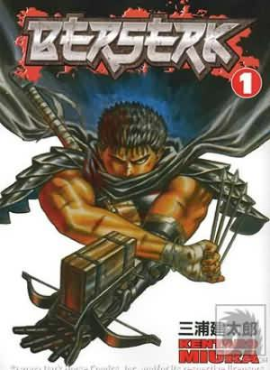

Alternative Name(s): Berserk Prototype, Berserk the Prototype
Author(s): Mura Kentaro
Genres: Action, Adventure, Fantasy, Horror, Mature, Seinen, Supernatural, Tragedy
Release: 1988
Satus: Current
Type: Manga
Length: 37 Volumes 331 Chapters
Read Online @:


More info @:

Notes
Violence, love, betrayal, insanity, all mixed in a historical time combined with creatures from legend. The plot for this story is amazingly detailed, mainly from the main character's, Gatts or Gutts depending on the translation, point of view but there are also some archs that are told from other's points of view. If your someone who enjoys fighting manga you will love this mercenary gone noble gone demon hunter! They even involve a church with all the secret sects that come along with it; Kingdoms with kings and princesses and trickery behind every corner.
anna@saracoff.com